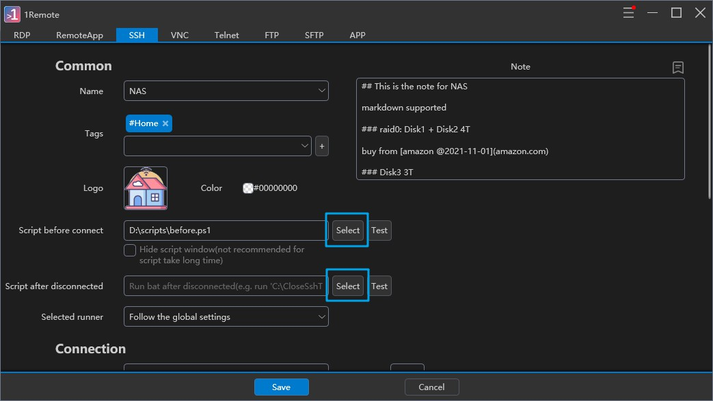
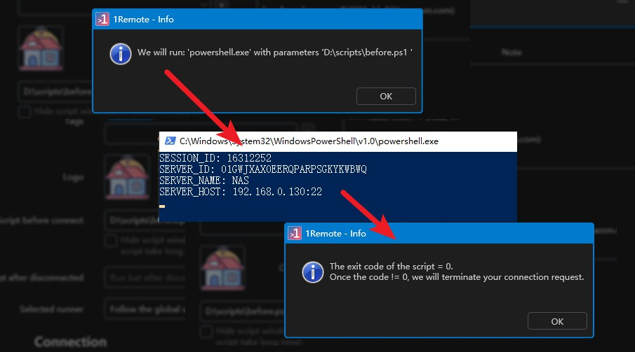

Using Pre- and Post-Connection Scripts in 1Remote
1Remote is a remote access application that allows users to establish connections to remote computers. One of its features is the ability to run pre- and post-connection scripts. These scripts can be written in cmd(.bat), PowerShell(.ps1) or Python(*.py) and can be used to perform various tasks before a connection is established or after it disconnected.
![uml diagram]()
To facilitate the script in identify each sessions, 1Remote will start the script with SESSION_ID, SERVER_ID, SERVER_NAME, and SERVER_HOST as environment variables.
Note
Noted：For the same server, the SESSION_ID for each session is different, while SERVER_ID, SERVER_NAME, and SERVER_HOST remain the same.
Setting Up Scripts
To set up a script in 1Remote:
- Find a place to keep your script files, and create scripts there.
- Navigate to the
Editpage of your server in 1Remote. -
Click the
Selectbutton and select the script file you want.
-
Click
Testbutton to test the script, the debug info will popup.
-
If it is all green, click
Savebutton to save. - Then your script will be run every time you start this server.
Example Pre-Connection Script
Here is an example of a script. The script will be executed in the directory where the script file is.
$sessionID = $env:SESSION_ID
$serverID = $env:SERVER_ID
$serverName = $env:SERVER_NAME
$serverHost = $env:SERVER_HOST
$serverTags = $env:SERVER_TAGS
echo "SESSION_ID: $sessionID"
echo "SERVER_ID: $serverID"
echo "SERVER_NAME: $serverName"
echo "SERVER_HOST: $serverHost"
echo "SERVER_TAGS: $serverTags"
Set-Content -Path "temp.txt" -Value "SESSION_ID: $sessionID`r`nSERVER_ID: $serverID`r`nSERVER_NAME: $serverName`r`nSERVER_HOST: $serverHost`r`SERVER_TAGS: $serverTags"
# in the script before connect:
# TODO: save $sessionID into file in pre-connect script
# TODO: if $serverTags contains "HOME" then open VPN1
# TODO: if $serverTags contains "WORK" then open VPN2
# in the script after disconnected:
# TODO: read $sessionID from file in post-connect script
# TODO: if $sessionID == "12345" then close VPN1
# TODO: if $sessionID == "ABCDE" then close VPN2
# do some long time jobs, like opening a VPN
sleep 3
# exit with non-zero will terminate your connection request.
exit 0
A typical application is to open a VPN before establishing a remote connection, and automatically close the VPN after terminating the remote connection.